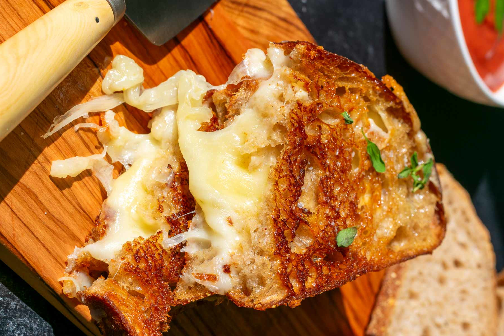

So you have chosen the path of the sandwich. That's fine I guess your just lazy rn that chill fatass anyway here you go a monkey can make this
Total Time: 10-13 minutes
Servings: 1 sandwich
Ingredients:
- 2 slices of bread. It's your choice but I recomend sourdough
- 2-3 Slices each of:
- A whole stick of Butter
Instructions
- If not already leave butter outside to become room temperature
- Heat a skillet over medium heat
- Spread the butter evenly on one side of the bread
- Place one slice of bread, butter side down, onto the skillet
- Add each of your cheeses onto that slice of bread. (Order doesn't matter)
- Place the 2nd slice of bread on top butter side up
- Cook until the bottom is golden brown. Usually 3-4 minutes
- Flip the sandwich and cook for another 3-4 minutes until the other side is golden and the cheese has melted
- Remove from the skillet and serve!!!
Tips:
- Add Tomato Slices in the sandwich or some garlic powder on the bread for a more enjoyable experience
may your bread be toasty and your cheese the meltiest
Home